Section 4.2: The Least-Squares Regression Line
Learning Objectives
1.Find and interpret the least-squares regression line as the line of “best fit”.
2.Describe and interpret the slope and intercept of the least-squares regression line.
3.Use the least-squares regression line to make predictions.
4.Understand when it is appropriate to use the least-squares regression line.
In section 4.1, we identified linear correlations between ordered pairs of data. A significant linear correlation means that the data form a linear pattern when you look at the points plotted in a scatterplot. The next step is to use the pattern to better understand how the variables are related, and to make predictions about other similar values that have no data.

Important Point!
We only use the linear model to make predictions when the correlation is significant! If the correlation is NOT significant, the data do not follow a line, so we don’t use a line to make predictions!
Example 1: Predicting a value from a Scatterplot
In examples 3 and 12 of section 4.1, we considered data from fast-food meals at several restaurant chains and verified that the correlation between Total Fat and Protein is significant. Figure 4.18 is the scatterplot using Total Fat as the explanatory variable and Protein as the response variable. Draw a line that fits the data. Use the line to estimate (or predict) the amount of protein in a fast-food meal containing 30 grams of total fat.

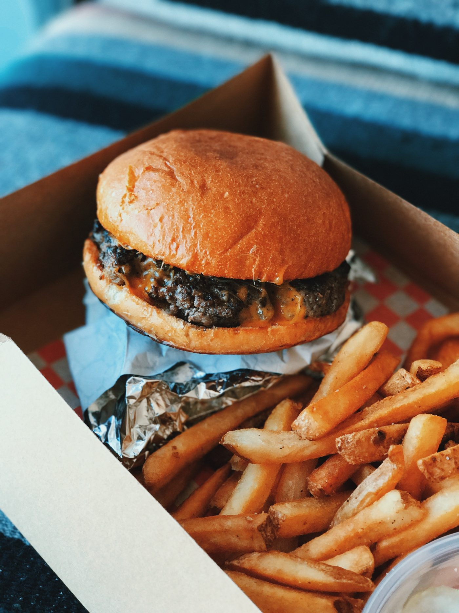
Photo by kayleigh harrington (opens in a new tab) on Unsplash (opens in a new tab)
Figure 4.18: Protein vs Total Fat scatterplot for example 1.
Solution:Since the correlation is significant, we can use a trend line to model the data. The line that fits the data the best is called the “fitted line” or “line of best fit”. At this point we are just guessing based on how the data look in the scatterplot. There are formulas to compute the line that we will consider shortly. Figure 4.19 shows some guesses as to how we draw the line. The first guess is not very good because most of the data is below the line on the left, and above the line on the right. So, the guess doesn’t really find the “middle” of the data. The second guess is poor for similar reasons, as the line misses the center of the groupings of data. The third one appears to come closest to the data points in the scatterplot. It hits the “middle” of the data groupings, and there aren’t too many points that are far away from the line. This is what we mean when we refer to it as the line of “best fit”, or “fitted” line.
Guess #1: Not too close to many data points. The line is too high on the left, and too low on the right.
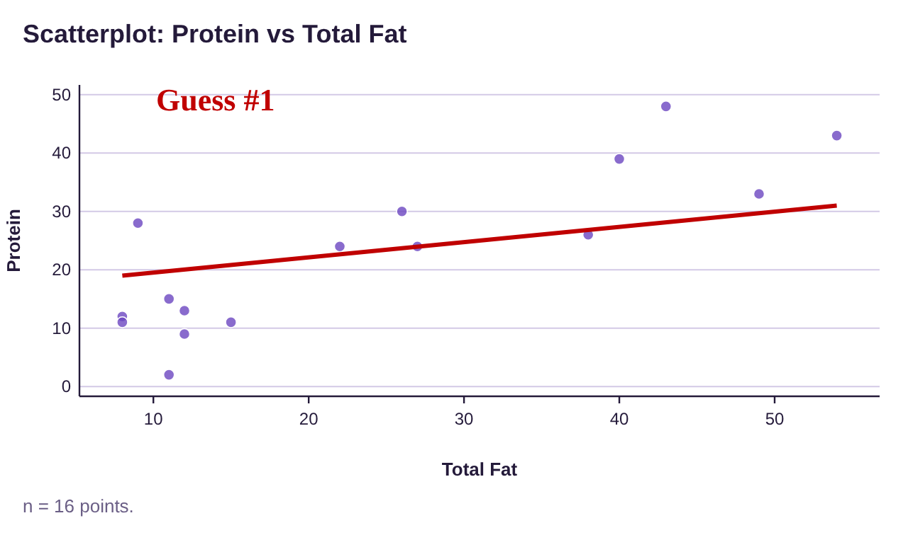
Guess #2: Not too close to many data points. The line is too low on the left, and too high on the right.
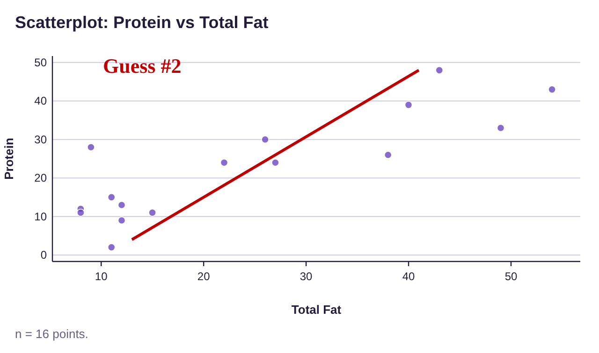
Guess #3: This line comes the closest to the data points. It isn’t perfect, but it captures the trend in the data.
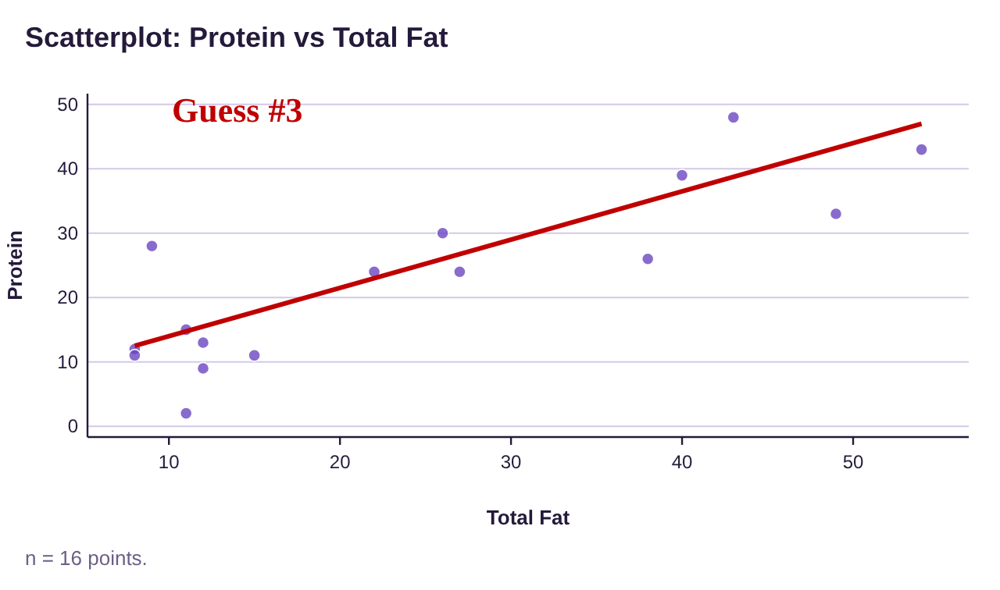
Figure 4.19: Protein vs Total Fat scatterplots and guesses for best fit lines.
To estimate the amount of protein in a fast-food meal with 30 grams of total fat, we use the line from the third guess. We find the x-value at 30 on the horizontal axis, then estimate the y-value directly above it on the line. It appears that the y-value is just under 30 grams of protein when the total fat is 30 grams. As an estimate, we would predict about 29 grams of protein in a fast-food meal that contained 30 grams of total fat.
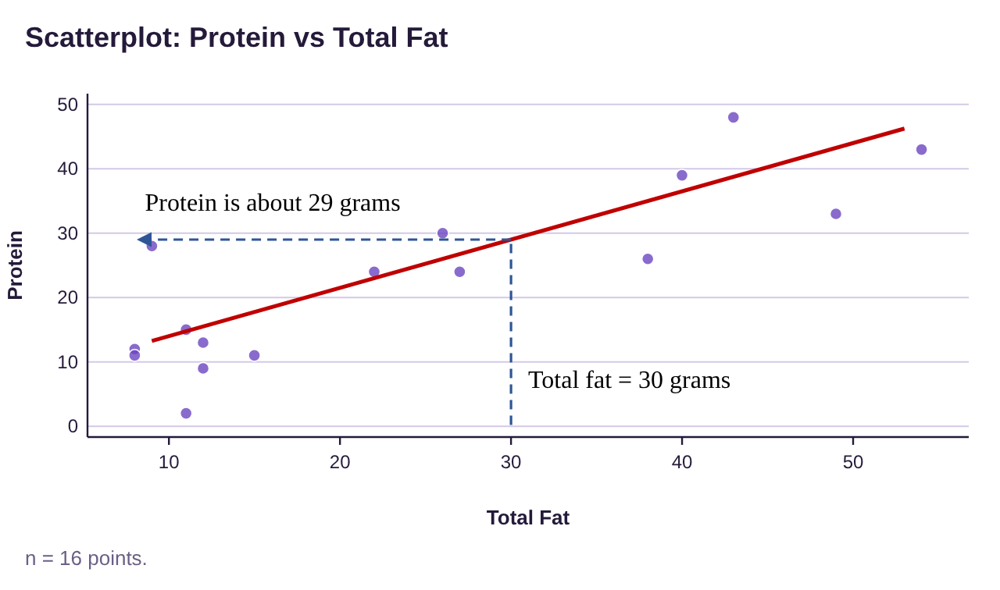
Once we have the equation for the line best fit line, we won’t need to guess by looking at the scatterplot. Instead, we will substitute the x-value into the trend line formula to get the estimated y-value. But to interpret the equation of the trend line, we need to review some things about lines.
Important Point!
The line of best fit has many names. This can be confusing when you are first learning about them. I prefer to use the term “trend line” because this name reflects its meaning. Different people and software call it by other names. The full, proper, and official name is “least-squares regression line.” Here are a few of the names that all mean the same thing as “trend line”.
•Least-squares regression line (or LSR line)
•Line of best fit
•Fitted line (a name some software uses)
•Regression line
•Least-squares line
A Short Review of Lines
If you have taken an algebra class, you may remember the slope-intercept equation of a line, .
Definition 1
The slope-intercept equation for a line is . The point is the y-intercept, and m is the slope of the line. See figure 4.20. We think of the y-intercept as the “starting point on the y-axis” when x = 0. The slope tells us how fast the line rises (positive slope) or falls (negative slope) moving from left to right.
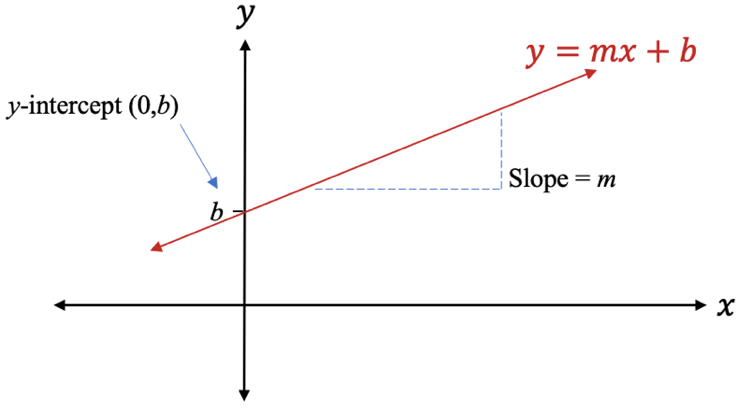
Figure 4.20: Slope-intercept equation of a line.
In our search for the trend line for the data, we will need to interpret the y-intercept and the slope in context. We will use x to represent the explanatory variable (in algebra it was called the independent variable) and y to represent the response variable (called the dependent variable in algebra).
Example 2: Interpreting the slope and y-intercept in context
The U-Haul moving-truck rental company charges $29.95 plus $1.19 per mile to rent a 15-foot truck. The total cost to rent the truck will depend on the number of miles it is driven. We will let x = the number of miles the truck is driven, and y = the total cost to rent the truck. The total cost function is then
Figure 4.21 is a graph of the cost function. Identify and interpret the y-intercept and slope of the total cost function.
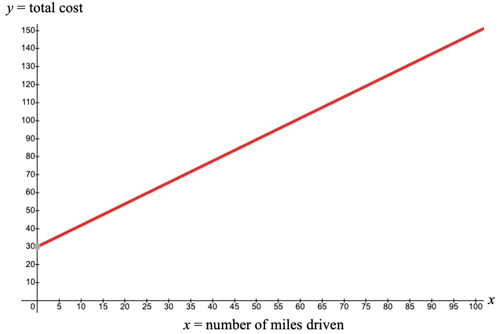
Figure 4.21: Cost to rent a 15-foot moving truck.
Solution:In the graph, we can see that the number 29.95 is the y-intercept. The y-intercept represents the cost of renting the truck if you drive it x = 0 miles. That is the initial cost, or fixed cost to rent the truck. The number 1.19 is the slope of the line. The slope represents the cost per mile. The total cost to rent the truck will increase by $1.19 for each additional mile you drive the truck.
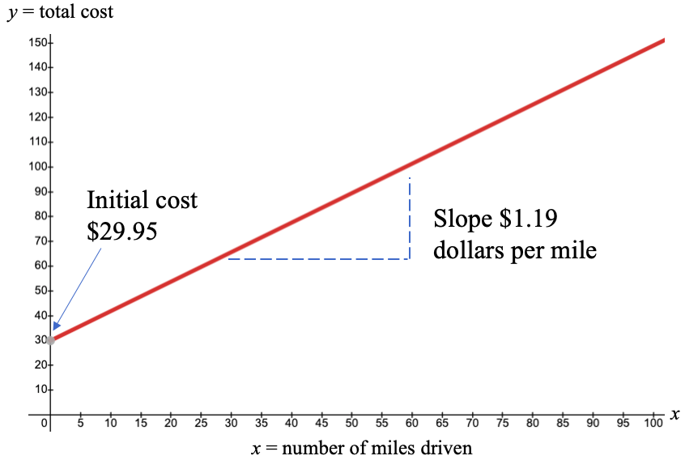
Figure 4.22: Cost to rent a 15-foot moving truck with slope and intercept interpretations.
The Least-Squares Regression Line
The process we use to find the trend line, formally known as the least-squares regression line, is called simple linear regression. In this section, we will refer to it as the regression line, but always think “trend line” when we use this term. The process of finding the regression line is often called “using regression.” The equation that we create is also called the least-squares regression model. Some books will include the formulas used to compute the slope and intercept of the regression line, but we will use technology to generate the results. Be aware that the formulas are very complicated! Our focus will be on how to interpret and use the information the technology provides.
Definition 2
The least-squares regression line (or model) is the trend line that we use to model paired quantitative data when there is a significant correlation between two variables. In statistics, we use the notation where represents the y-intercept and represents the slope (this is just with different notations and the order of the addition switched).
Important Point!
1.The symbol is read “y-hat”. The “hat” tells us that it is an estimated or predicted value from the trend, not a y-value from the data.
2.The slope is the coefficient of x, which is . Since slope is , we can interpret to mean that for each 1 unit increase in x, changes by units. Whether increases or decreases depends on the sign of the slope.
3.The y-intercept = means when x = 0, (Sometimes the y-intercept will have no physical meaning, but it is still part of the equation and is needed to plot the line)
Example 3: Interpreting the Least-Squares Regression Line
In example 1 we considered data from fast-food meals at several restaurant chains. Figure 4.23 is the scatterplot using Total Fat as the explanatory variable and Protein as the response variable. The regression line (think “trend line”) that models the data is and is calculated from the data and plotted in the scatterplot by STATBELT Utility. (a) Use the regression line to estimate the amount of protein in a fast-food meal containing 30 grams of total fat. (b) Interpret the slope and y-intercept of the regression equation.
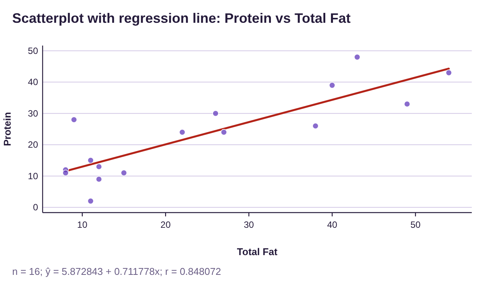
Figure 4.23: Protein vs Total Fat scatterplot for example 3, with trend line.
Solution:(a)In order to predict the protein for a fast food meal containing 30 grams of total fat, we simply plug x = 30 into the regression equation.
The predicted amount of protein is
(Multiply before we add)
This means fast food meals containing 30 grams of total fat will have around 27.2 grams of protein, on average. In example 1, we estimated the trend line and thought the amount of protein would be around 29 grams, so we were close. But using the equation of the regression line to make the prediction is more precise.
(b)The y-intercept of the regression equation is . That means that fast-food meals with zero grams of fat would contain about 5.9 grams of protein on average. But since none of the meals have zero fat, this estimation does not really have any meaning. In this data set, zero fat is not included, so the y-intercept is used only for graphing. You can see that STATBELT Utility draws the line only from the smallest Total Fat value, 8.
The slope is . The interpretation of the slope is that for each one-gram increase in total fat, we expect the protein to increase by 0.71 grams, on average.
 Tip!
Tip!When you look at the regression line, the value that is multiplying the x is the slope. The other number is the y-intercept. Usually the y-intercept is written first in the trend line equation, but not always!
STATBELT Utility- Computing the Least-Squares Regression Line
Open STATBELT Utility and type or paste the data into two columns. Type a name for each column in its heading.
1.Select Descriptive Statistics → Regression.
2.Choose the explanatory variable for “Explanatory variable (x)” and the response variable for “Response variable (y).”
3.Click “Show results in a new window.”
Note that STATBELT Utility writes the equation with ŷ and x, and the line under the equation says which column each one stands for.
Example 4: Using STATBELT Utility to find the Least-Squares Regression Line
Use STATBELT Utility to generate the regression results that we saw in example 3. You can copy the Protein vs Fat data (opens in a new tab).
Table 2: Protein vs Fat | |||||||||||||||||
|---|---|---|---|---|---|---|---|---|---|---|---|---|---|---|---|---|---|
Total Fat | 8 | 11 | 27 | 26 | 40 | 43 | 15 | 22 | 9 | 12 | 11 | 8 | 12 | 38 | 49 | 54 | |
Protein | 12 | 15 | 24 | 30 | 39 | 48 | 11 | 24 | 28 | 9 | 2 | 11 | 13 | 26 | 33 | 43 | |
Solution:STATBELT Utility does not keep data after the page closes. If you saved the data from example 12 in section 4.1 (Data → Import or export data → Export data as CSV), you can load it again with Data → Import or export data. If not, type or paste the data into two columns, and make sure to name the columns “Total Fat” and “Protein.”
Select Descriptive Statistics → Regression.
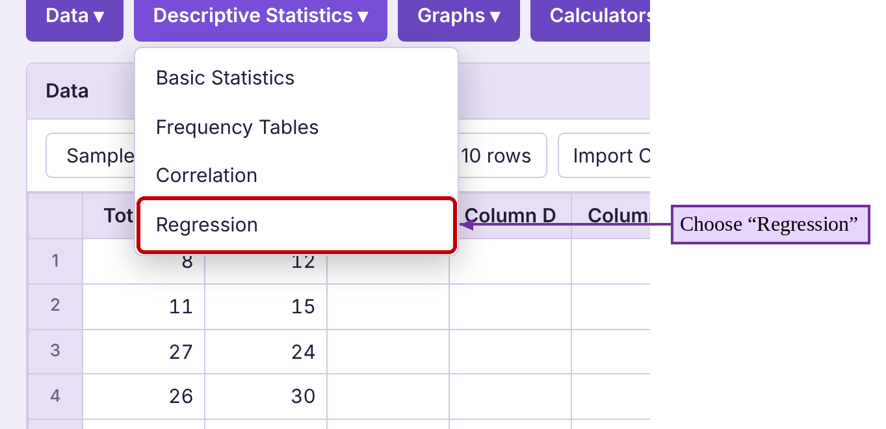
Next choose “Total Fat” for “Explanatory variable (x)” and “Protein” for “Response variable (y).” Then click “Show results in a new window.”
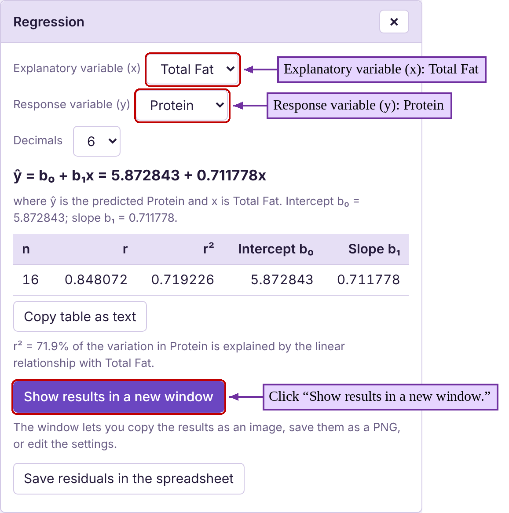
The results, given below, include more than you need to find the line. The line itself is at the top of the window!
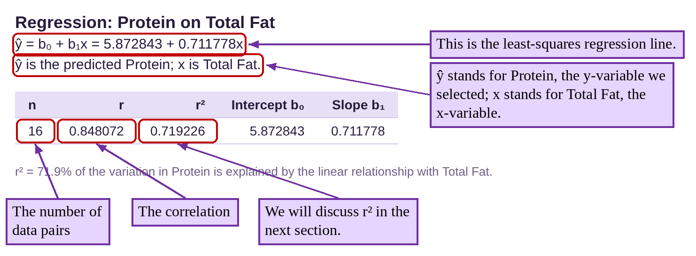
So, in this case, the regression line is where x = the amount of total fat in the fast-food meal, and the average amount of protein for meals with x grams of total fat.
[Note: The y-intercept was rounded to one decimal place because that is one more place than the y-values in the data, similar to the rounding rules we followed for finding the mean of a set of data. The slope was rounded to two decimal places because the x-values had two digits to the left of the decimal. (It is usually a good idea to round the slope to the same number of decimal places as the number of digits to the left of the decimal in the x-value data. This is because when a decimal is multiplied by 10, it will move the decimal one place to the right. So, data whose x-values are in the tens (two digits), should have a slope with two decimal places of accuracy. If the x-values were in the hundreds (three digits), we should round the slope off at three decimal places. If the x-values were in the thousands (four digits), we would round the slope off at 4 decimal places, etc.) If you are computing a prediction using the formula, you can use all the digits and save the rounding for the end. But if you are writing down the trend line, it’s better to use the rounded slope and intercept.]
If we check “Show scatterplot” and “Show regression line” in the Regression options and click “Open graph in a new window,” STATBELT Utility shows the scatter plot with the trend line plotted, shown in figure 4.24. Notice that the actual data points are not on the line, but they tend to follow the same upward trend.
Figure 4.24: Protein vs Total Fat scatterplot with least-squares regression line.
Example 5: Finding and using the regression equation to make a prediction
The data from example 13 in section 4.1 is given in Table 3. You can copy the Miles Per Gallon vs Weight data (opens in a new tab). (a) Verify that there is a significant linear correlation. (b) Find the equation of the regression line. (c) Use the regression line to predict the gas mileage for a car that weighs 3000 pounds. (d) Interpret the slope and intercept in the regression equation.
Table 3: Miles Per Gallon vs Weight | |||||
|---|---|---|---|---|---|
Car | Weight | Miles Per Gallon | Car | Weight | Miles Per Gallon |
69 Chevy truck | 5200 | 9 | Honda Civic | 2877 | 30 |
Chevy Camaro | 3339 | 19 | Honda Pilot | 4030 | 20 |
Dodge Charger | 3964 | 19 | Hyundai Tucson | 3329 | 26 |
Dodge Neon | 2580 | 27 | Mazda 6 | 3179 | 26 |
Ford Escape | 3298 | 27 | Subaru Outback | 3641 | 26 |
Ford F-150 | 4705 | 17 | Toyota Rav4 | 3370 | 27 |
Ford Mustang | 3526 | 22 | Toyota Tacoma | 3915 | 20 |
Honda CR-V | 3337 | 28 | |||
Solution:(a)We showed that there is a significant correlation in example 13 of section 4.1. The scatterplot and correlation are shown in figure 4.25.


Figure 4.25: Miles Per Gallon vs Weight scatterplot and correlation.
The scatter plot shows a negative correlation computed to be , which is close to -1.
This sample has pairs of data, so the critical value is 0.514 (from Table 5, the critical values table in section 4.1). Since , we determine that the correlation is significant. The data follow a linear pattern. That means that using the least-squares regression line to model the data is appropriate. In other words, since the correlation is significant, we can use regression to make a trend line.
(b)Select Descriptive Statistics → Regression. Choose “Weight” for “Explanatory variable (x)” and “Miles Per Gallon” for “Response variable (y),” then click “Show results in a new window.” The STATBELT Utility results are given as
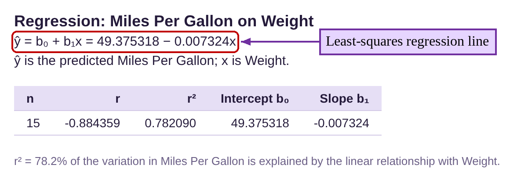
The least-squares regression equation is where x = the weight of the car and the estimated MPG rating for car that weighs x pounds. We would like our predictions accurate to one decimal place, so the y-intercept is rounded at one decimal place, and the slope is rounded to four decimal places (since the x-values are given in the thousands, or four digits). The regression line is plotted in figure 4.26.
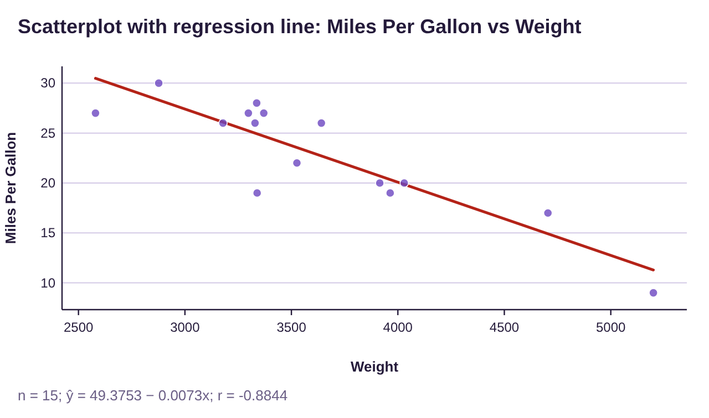
Figure 4.26: Miles Per Gallon vs Weight scatterplot and least-squares regression line.
(c)To predict the MPG for a car that weighs 3000 pounds, plug into the equation.
So, cars that weigh 3000 pounds are expected to get about 27.5 MPG, on average.
(d)In this case, the interpretation of the y-intercept is meaningless. It suggests that if you have a car that weighs zero pounds, it will get 49.4 MPG. But a car that weighs zero pounds is impossible! The 49.4 is useful for graphing the line but has no contextual meaning.
On the other hand, the slope has a useful interpretation. The slope is -0.0073. The negative indicates that heavier cars will get lower gas mileage. You could say that for each additional pound of weight, the fuel efficiency will decrease by about 0.0073 miles per gallon. Those numbers are so small though, they are difficult to understand. You can rephrase the interpretation as “for each additional 100 pounds of weight, the fuel efficiency will decrease by about 0.73 MPG” (that is ) or “for each 1000 pounds of additional weight, the fuel efficiency will decrease by about 7.3 MPG” (that is, ). From the last interpretation, we can see that the average 3000-pound car will get about 7.3 more miles per gallon than the average 4000-pound car.
When Should we use Regression?
We began the section with this very important point.
Important Point!
We only use the linear model to make predictions when the correlation is significant! If the correlation is NOT significant, the data do not follow a line, so we don’t use a line to make predictions!
So, if the linear correlation is not significant, the data do not follow a linear pattern, so we SHOULD NOT USE REGRESSION! In that case, the best estimate for the y-value is the mean of the y-values, . See figure 4.27.
Figure 4.27: When should we use the least-squares regression line?
Example 6: Should Regression be Used?
The data in Table 4 shows heart rate and cholesterol levels in patients, seen in example 14 of section 4.1. Is it appropriate to use simple linear regression to make predictions about cholesterol levels (response variable) from heart rates (explanatory variable)? You can copy the HDL Level vs Heart Rate data (opens in a new tab).
Table 4: HDL Level vs Heart Rate | |||
|---|---|---|---|
Heart Rate | HDL Level | Heart Rate | HDL Level |
80 | 52 | 78 | 61 |
70 | 48 | 82 | 69 |
80 | 35 | 67 | 60 |
71 | 55 | 66 | 62 |
72 | 53 | 64 | 63 |
78 | 54 | 71 | 66 |
78 | 46 | 72 | 43 |
74 | 56 | 70 | 30 |
67 | 53 | 68 | 40 |
64 | 46 | 76 | 62 |
Solution:In example 14 of section 4.1 we created the scatterplot and calculated the correlation, shown in figure 4.28.


Figure 4.28: HDL cholesterol vs Heart Rate scatterplot and correlation.
The scatterplot shows no linear pattern, and the correlation is which is very close to 0.
This sample had pairs of data, so the critical value is 0.444 (from the critical values table for correlation in section 4.1). Since is NOT greater than the critical value 0.444, we determine that the correlation is NOT significant. The data do not follow a linear pattern, which supports the visual evidence we see in the scatter plot. Since the correlation is NOT significant, we DO NOT use the least-squares regression line to make predictions about the data.
Since heart rate and cholesterol are uncorrelated, knowing heart rate is irrelevant to predicting cholesterol level, according to our results. So, if we want to estimate a cholesterol level, we simply use the mean cholesterol level from the data, found using STATBELT Utility (select Descriptive Statistics → Basic Statistics and check “HDL Level,” as we did in section 3.1).
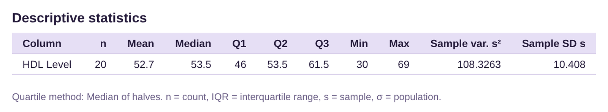
The mean value for HDL cholesterol level is 52.7 milligrams per deciliter. This is the best estimate for HDL cholesterol level regardless of the heart rate of the patient.